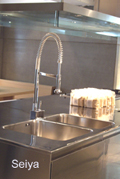
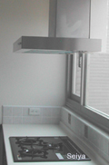

除油煙垢味
※廚房是油煙最多的地方,往往年輕家庭主婦都不知要從何下手清潔,其實並不困難,只要日常有做好保養,除了可保持其使用年限.更可以看來如新一般,以下就簡介廚房最常見的問題與解決之道,而排油煙機未正確使用也會造成室內PM2.5
正確使用方法是應該將廚房以外之房間.或客廳窗戶開啟,造成對流循環,排油煙機其效果才佳,其油煙才能以正壓方式排出
油煙鏽垢清潔


廚房日常清潔可用洗碗之沙拉脫及海綿,只要是每星期都有清潔,是不需要用到較強之清潔劑,市面上 強力除油的清潔濟有液体噴劑及高壓泡沫噴罐,市場平價清潔劑可選擇穩潔除油或白博士,(以鹼性為主)但要注意的就是要穿戴手套及口罩,避免造成皮膚或呼吸道的傷害.日常清潔最好的方還還是使用熱水,除了環保也對自己健康有保障.
如果油垢並不多,可用熱水清洗,如果是陳年油垢可用鹼性清潔劑先與浸潤3-10分後再予清洗.或是單純用煮沸方式清洗也可以.
廚房只要有使用瓦斯時,都建議將排油煙機打開,除了可把油煙抽除,還可把溼氣,或是燃燒不完全一氧化碳或熱氣抽出,排油煙機內部清洗時,是要將整部拆除分解,而排煙管,大都是使用鋁軟管,此材料取得容易,價格便宜,舊有管路內部油垢因不易清洗,此部份建議換新管會比較划算
先檢查是否為光面,如光面在除繡時需注意到避免傷到其表面
不鏽鋼之好壞,可依其耐酸鹼度而定,一般都添加鉻或其它金屬,再依不同製成所煉製出,好的不鏽鋼基本上是不會生鏽,也耐清洗,雖然價格較為貴,但反而減少日後保養的問題,因此在購買不鏽鋼時應該多加注意,在清潔時,也只需使用海綿及一般廚房用的清潔劑清洗即可,千萬不要用強酸鹼去清洗,如有強酸鹼在其表面上,立即用水沖洗,勿讓其液体殘留表面

除油煙味
(網站更新中 )
此為大多家庭所困擾,在發現有蟑螂時,可購買市面上殺蟑劑,最好是購買這1-2年之新藥配方,避免有些蟑螂已有抗藥性,如果持續無法解決此問題,建議尋找專業消毒人員處理